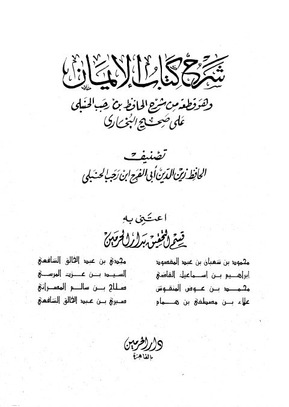

Downloads need an internet connection.
شرح كتاب الإيمان وهو قطعة من شرح الحافظ بن رجب الحنبلي
Authors: ابن رجب الحنبلي
Editors: قسم التحقيق بدار الحرمين
Publishers: دار الحرمين
**▫️ العنوان: شرح كتاب الإيمان وهو قطعة من شرح الحافظ بن رجب الحنبلي** ▪️ المؤلف: #عبد_الرحمن_البغدادي_بن_رجب_الحنبلي ▫️ المحقق: #قسم_التحقيق_بدار_الحرمين ▪️ الناشر: #دار_الحرمين ▫️ تاريخ النشر: 1418هـ 1998م ▪️ بلد النشر: القاهرة، #مصر ▫️ الطبعة: 1 ▪️ عدد الأجزاء: 1 ▫️ الصفحات: 240 ▪️ نوع الوعاء: #كتاب ▫️ التصنيف الرئيسي: #الحديث_وعلومه ▪️ التصنيف الفرعي: #الكتب_الستة ۪